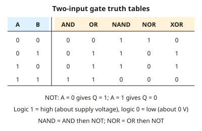

A-level Physics Year 13 · Topic 25
Electronics: digital systems and communication
Digital systems and communication is about how electronic circuits make decisions, remember information and send it.
We will use logic gates, truth tables and Boolean algebra, and design combinational circuits.
Then we build memory with latches and flip-flops, count with counters, time with the 555, and see how signals are transmitted.
- 7 subtopics
- 255 questions
- Free: 25.1 notes and 10 questions
In this topic
- 25.1Logic gates and truth tablesFree below · 25 questions
- 25.2Boolean expressions and NAND/NOR-only circuitsOpen in Full Marks · 55 questions
- 25.3Designing combinational logic systemsOpen in Full Marks · 21 questions
- 25.4Bistables, SR latches and flip-flopsOpen in Full Marks · 24 questions
- 25.5Counters and clocked sequential circuitsOpen in Full Marks · 69 questions
- 25.6The 555 timer: astable and monostable operationOpen in Full Marks · 25 questions
- 25.7Data communication: modulation, noise and bandwidthOpen in Full Marks · 36 questions
25.1 · Free notes
Logic gates and truth tables

Key points
- A logic gate is a digital circuit whose output is logic 1 (high) or logic 0 (low), set by its input levels. Logic 1 is close to the supply voltage (e.g. 5 V) and logic 0 is close to 0 V.
- A truth table lists every possible input combination and the resulting output. A gate or system with n inputs has 2ⁿ rows, so 2 inputs give 4 rows and 3 inputs give 8.
- NOT has one input and inverts it: 0 becomes 1 and 1 becomes 0.
- AND gives 1 only if both inputs are 1. OR gives 1 if either or both inputs are 1.
- NAND is AND followed by NOT, so its output is 0 only when both inputs are 1. NOR is OR followed by NOT, so its output is 1 only when both inputs are 0.
- EOR (XOR) gives 1 only when the two inputs differ. With inputs 1,1 the output is 0, which distinguishes it from OR.
- A combinational system has an output that depends only on the present inputs, with no memory or stored state.
- Sensors such as an LDR or thermistor in a potential divider supply the input voltage. The gate treats it as logic 1 or 0 relative to a threshold of roughly half the supply.
- A gate output can supply only a small current. It can light an LED through a series resistor, but larger loads such as motors, heaters and relays need a transistor or relay driver.
- For a combined circuit, add an intermediate column to the truth table for each internal gate output and work through it one stage at a time.
- Gate ICs need a power supply and 0 V connection, and unused inputs must not be left floating. Connect them to 0 V or the supply.
In more detail
- Worked AND: an alarm sounds only if it is switched on (A = 1) AND a door opens (B = 1): Q = A AND B.
- Worked combined circuit: for Q = (A AND B) OR NOT C, Q = 1 whenever C = 0, and also when A = B = 1; it is 0 in only 3 of the 8 rows.
- XOR uses: XOR outputs 1 when its inputs differ, so it checks whether two bits match and gives the sum bit in a binary adder.
- Memory trick: NAND = "not both", NOR = "neither", XOR = "one or the other but not both".
Practice
Logic gates and truth tables: 10 questions
Pick an answer to check it, or open the answer for the explanation.
1. For which input condition does a two-input NOR gate give logic 1?
- Both inputs at logic 1
- Both inputs at logic 0
- Either input at logic 1
- Inputs at different logic levels
Show answer
B: Both inputs at logic 0. NOR is OR followed by NOT. OR gives 0 only when both inputs are 0, so NOR gives 1 only in that case.
2. An EOR (XOR) gate has both inputs at logic 1. What is its output?
- Logic 1
- Logic 0
- Logic 1 only if the supply is 5 V
- Floating (undefined)
Show answer
B: Logic 0. EOR gives 1 only when the inputs differ. Both inputs are the same here, so the output is 0.
3. A two-input gate gives output 0 only when both inputs are 1. Which gate is it?
- EOR
- OR
- NOR
- NAND
Show answer
D: NAND. NAND is the inverse of AND. AND is 1 only for 1,1, so NAND is 0 only for 1,1.
4. How many rows are needed in a truth table for a system with three inputs?
- 8
- 6
- 9
- 3
Show answer
A: 8. The number of rows is 2ⁿ. For n = 3 this is 2³ = 8.
5. A NOT gate on a 5 V supply has its input connected to 0 V. What is its output?
- About 5 V (logic 1)
- About 2.5 V
- About 0 V (logic 0)
- About −5 V
Show answer
A: About 5 V (logic 1). A NOT gate inverts its input. Logic 0 in gives logic 1 out, which is close to the 5 V supply.
6. Inputs A and B feed an AND gate whose output goes to a NOT gate. Which single gate is equivalent to this combination?
- NOR
- OR
- NAND
- EOR
Show answer
C: NAND. AND followed by NOT is the definition of NAND. Its output is 0 only for inputs 1,1.
7. A gate's output Q is 1,0,0,0 for (A,B) = (0,0), (0,1), (1,0), (1,1). Which gate is it?
- EOR
- NOR
- AND
- NAND
Show answer
B: NOR. The output is 1 only when both inputs are 0. That is the NOR function: OR inverted.
8. Inputs are A = 1 and B = 0. Which two-input gate gives output logic 0?
- NOR
- EOR
- NAND
- OR
Show answer
A: NOR. For inputs 1,0, OR gives 1, NAND gives 1 and EOR gives 1. NOR is the inverse of OR, so it gives 0.
9. Sensor X is high when it is dark and sensor Y is high when movement is detected. A lamp is driven from an AND gate on X and Y. When is the lamp on?
- Light and movement detected
- Dark or movement detected
- Dark and movement detected
- Dark, whether or not there is movement
Show answer
C: Dark and movement detected. An AND gate outputs 1 only when both inputs are 1. The lamp is therefore on only when it is dark and movement is detected.
10. Which statement about logic systems is correct?
- A combinational system's output depends only on its present inputs
- A NAND gate gives 1 only when both inputs are 1
- An EOR gate gives 1 when both inputs are 1
- A NOT gate has two inputs
Show answer
A: A combinational system's output depends only on its present inputs. Combinational logic has no memory. NAND gives 0 for 1,1, EOR gives 0 for 1,1 and NOT has one input.
Keep going in Full Marks
Full Marks has 25 questions on Logic gates and truth tables (15 more than here), set out in practice levels. You also get notes and 3D models for all 7 subtopics of Electronics: digital systems and communication, plus games, timed exams and past papers.
On your exam board
Not in the OCR A, OCR B, Edexcel and Cambridge specifications.